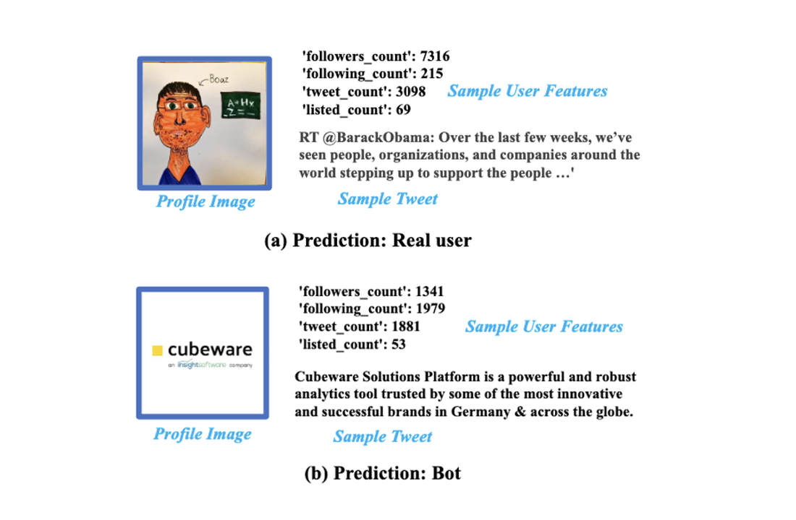
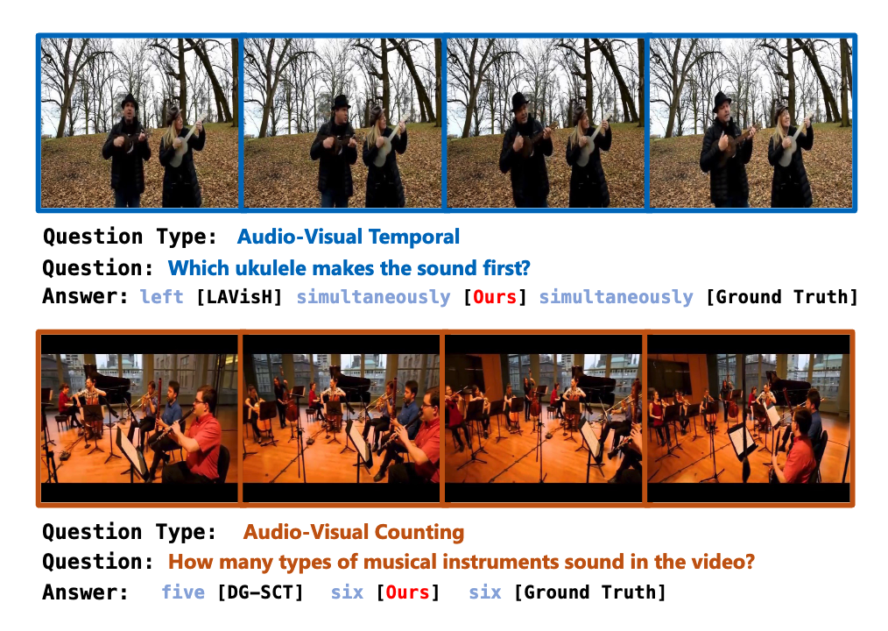

Tingxuan (Winnie) Wu
About Me
I am a Financial Mathematics and Statistics graduate from the London School of Economics and Political Science (LSE) . My current research focuses on multimodal large language models (MLLMs) for advanced understanding, as I believe the future of AI lies in its ability to comprehend and process multiple forms of information simultaneously - just as humans do.
I have experience at leading Chinese financial institutions. At Founder Securities (2024), I developed real-time analytics dashboards for Chinese government bonds and design deep learning models for macroeconomic forecasting. At Everbright Futures (2022), I worked on multi-factor modeling for commodity futures prediction and portfolio optimization. At Guosen Securities (2021), I analyzed healthcare stocks and market trends to support investment strategies.
|  |
Tingxuan Wu, Zhaorui Ma, Yanjun Cui, Ziyi Zhou, Eric Wang AAAI Conference on Artificial Intelligence W3PHIAI-25, Springer Nature in Studies in Computational Intelligence, 2025 |
|  |
Xingjian Diao, Chunhui Zhang, Tingxuan Wu, Ming Cheng, Zhongyu Ouyang, Weiyi Wu, Jiang Gui Conference on Empirical Methods in Natural Language Processing (EMNLP), 2024 |